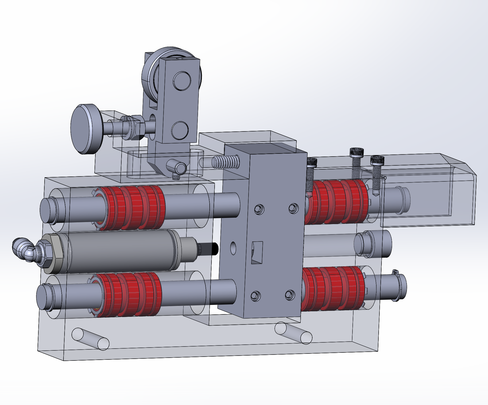
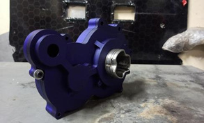

Manufacturing
Bar-shear die-box redesign
Redesigned a die-box assembly to address recurring bolt shear failures and improve serviceability.
75% less service timeExplore mechanical design, manufacturing, troubleshooting, and testing.
15 projects
Redesigned a die-box assembly to address recurring bolt shear failures and improve serviceability.
75% less service timeDeveloped a chain-drive system to replace the previous prop-shaft arrangement, reducing weight and assembly time.
Built system
Built a data-acquisition system to compare real drivetrain behavior with a CVT simulation.
DAQ built and compared with model
Combined PLC logic tracing, electrical diagnosis, and robot maintenance to investigate production equipment faults.
Hands-on equipment support
Developed a custom damping arrangement for a dust-collector hopper winch experiencing wire-rope failures.
Designed and fabricatedRecreating a gauging screen in EZTouch 2.5 to move away from a legacy HMI.
In progress
Designed and analyzed a cage-less open differential for a four-wheel-drive ATV.
Design, analysis & hardware
Designed and fabricated an interlocking sheet-metal stand to display an assembled differential and axles.
Designed and fabricated
Used robot stacking patterns to develop a partitioned metal pallet for axle handling.
CAD design & program review
Implemented a sleeve to address extrusion runout, then developed a holder redesign with production and maintenance feedback.
<2% runout-related reject rate
Reconstructed an existing gauge module and revised its mechanical design around reliability concerns from the shop floor.
CAD and drawings complete; testing pending
Developed a custom heater hold-down through CAD iterations and 3D-printed fit checks, with attention to service access.
Prototype fit checks completed
Checked a supplier-built conveyor-hook fixture in CAD and at delivery, then helped trial marked sample hooks on the line.
Fixtures inspected; limited line trial completed
Checked crane clearance, built the replacement schedule with input from the team, and coordinated a rigging quote for a heat-treat tower replacement.
Installed; initial parts run documented
Designed a fixed-ratio gearbox for an ATV, checked assembly clearances and structural behavior, and coordinated machining.
Design, analysis & manufactured hardwareTry a different project name, tool, or skill.
Mechanical Design / Manufacturing / Test Engineering